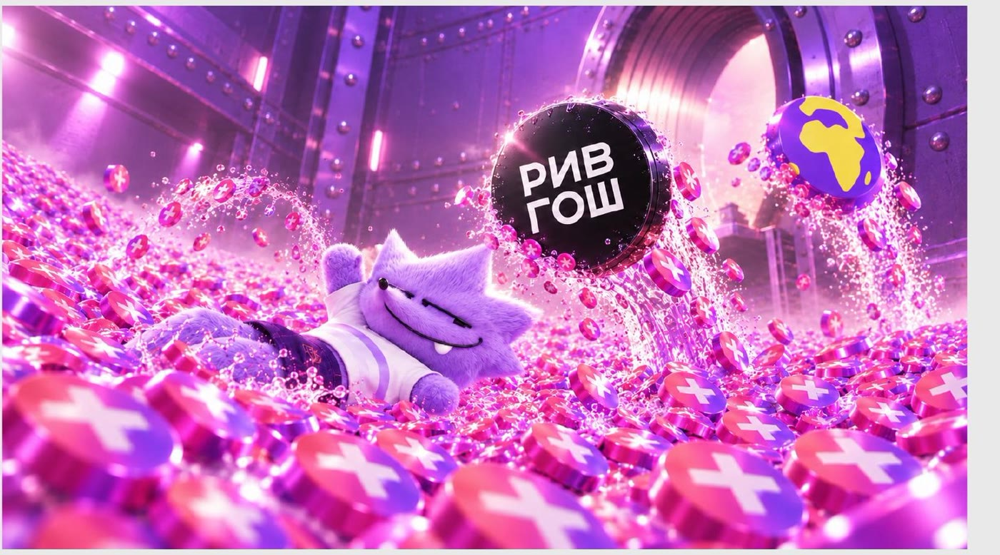
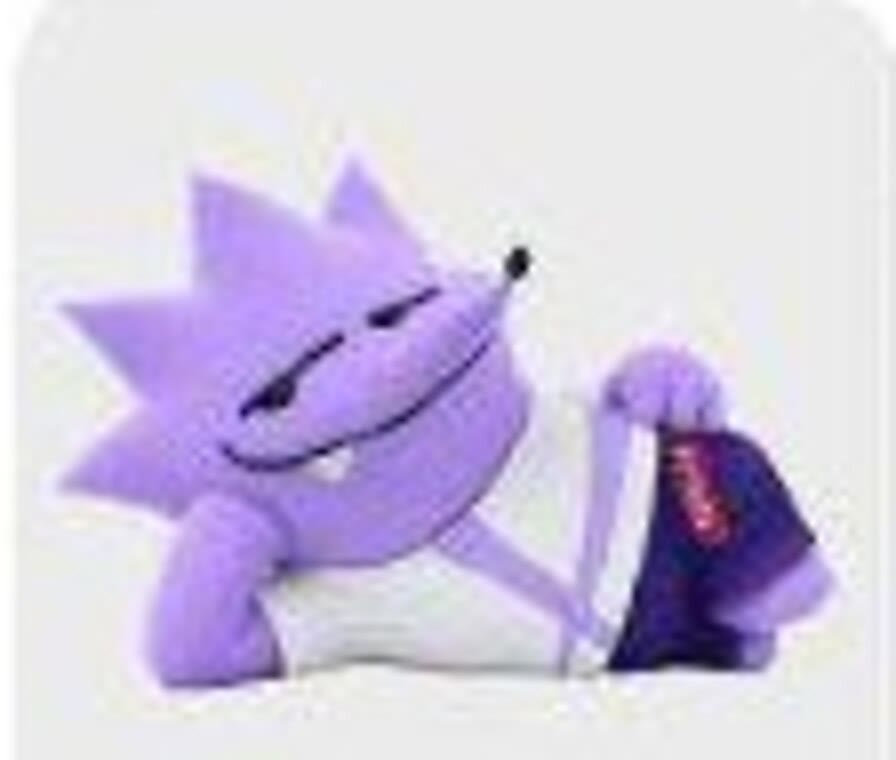

0050 — плывёт
Рендер Тимура, v003, 1,2 с, 1920×1080
СкачатьВсё лежит в папке на Диске. Рендеры Тимура и рефы ежа — ниже, качаются по кнопке.
Одна эмоция на прогон, начать с первых трёх.
На это равняемся по шерсти и морде.



Бриф целиком